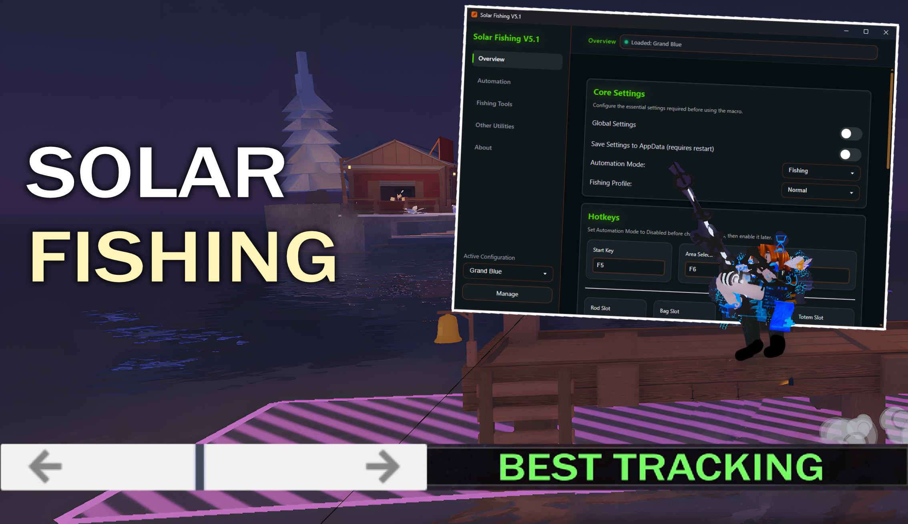

Advanced Roblox Fisch macro powered by computer vision. Hands-free fishing with near-zero setup, adaptive rod support, and 100% transparent open-source code.
Download Solar Fishing, an advanced Roblox fishing macro featuring full fishing automation and flexible rod support. Super simple setup - download the macro, change areas, enable hotkeys, and start fishing.
🔎 Fully transparent: The complete source code is available on GitHub for anyone who wants to review how it works.

Solar Fishing is an advanced automation macro for Roblox Fisch, designed to provide reliable, hands-free fishing with almost no setup.
🚀 Downloading and using Solar Fishing is straightforward.
Step 1: Select your operating system in the Downloads panel on the right.
Step 2: Double click on the Solar Fishing application to run.
Step 3: Open your areas selector and select your rod.
That's it! Solar Fishing will work perfectly.
✅ Supports Windows 10/11 • macOS • Linux • Works with all rods • Auto-updates available